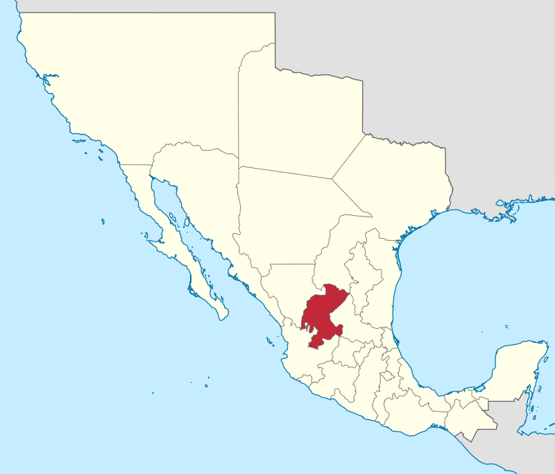
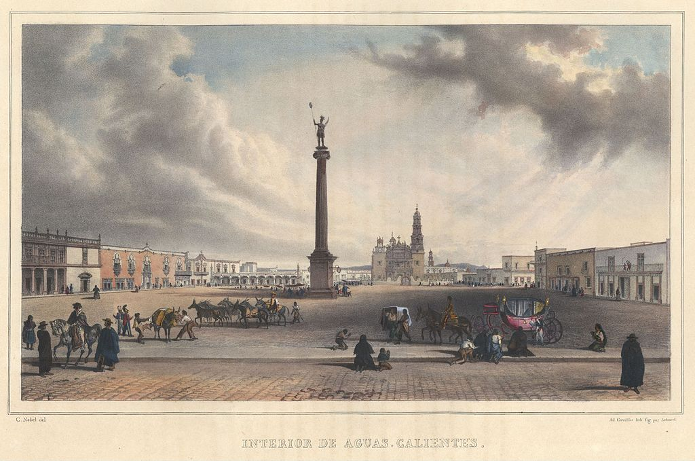

Aguascalientes, oficialmente llamado Estado Libre y Soberano de Aguascalientes, es uno de los treinta y un estados que, junto con la Ciudad de México, forman México.1112 Su capital y ciudad más poblada es Aguascalientes. Colinda al norte con Zacatecas y al sur con Jalisco. Tiene un territorio de 5,618 km². Es el tercer estado menos extenso, con el 0.3% de la superficie de total del país. Se divide en 11 municipios. Tiene una población de 1,513,544 hab. (estimación del 2015), concentrada preponderantemente en la zona metropolitana de Aguascalientes, que abarca tres de sus municipios. Es el sexto estado menos poblado y el cuarto más densamente poblado con 210.93 hab/km². Su territorio, bajo jurisdicción de la ciudad homónima y siendo el núcleo de su formación, estuvo siempre ligada a Zacatecas, primero siendo esta, provincia del Reino de Nueva Galicia entre 1575 y 1786; y posteriormente como Intendencia (1786-1821), y finalmente como Estado o Departamento (1821-1857), hasta su separación de la misma y la erección como entidad federativa en 1857.
La presencia humana en el territorio data del 20000 a.C. Posteriormente, habitaron las civilizaciones chichimecas, sobre todo las naciones caxcan, guamare y los chichimecas blancos. El primer intento de conquista española data de 1531. En el Virreinato de la Nueva España el territorio actual que conforma Aguascalientes pertenecía a la Provincia de Nueva Galicia. Tras la Independencia de México, el 23 de mayo de 1835 se creó el Territorio de Aguascalientes por orden de Antonio López de Santa Anna, separándolo del Estado de Zacatecas. El 5 de febrero de 1857, con la promulgación de la Constitución de 1857 fue elevado a entidad federativa como el vigésimo cuarto estado de la federación. Durante el Porfiriato experimentó una transformación económica, social y artística desde entidad agropecuaria a polo industrial, debido a la presencia de los Talleres Generales del Ferrocarril Central Mexicano.1718 Su capital fue la sede de la Soberana Convención Revolucionaria de 1914. Actualmente alberga al Instituto Nacional de Estadística y Geografía, así como las fábricas más importantes de Nissan Motor Company en Latinoamérica. La capital también es conocida por su Feria Nacional de San Marcos.
